Part one
Opening the portal

Acknowledge arrivals
Welcome them in
Pick one or two as the tiles fill. Loving, never mean: the roast is the welcome.
Early · the teacher's pets"Oh, look at the early birds. The teacher's pets. Somebody brought an apple, I can feel it through the screen."
"If you got here early, the guides already gave you a gold star. It's on your third eye. Don't touch it, it's still drying."
"You're the people who get to the airport three hours early for a domestic flight. I love you. I'm also a little scared of you."
"Ram Dass said be here now. You heard 'be here ten minutes ago.' Overachievers. Gorgeous, gorgeous overachievers."
"Early crew, you get first pick of the good energy. Front-row seats, in a Zoom that has no front row."
Right on time · too cool for school"Right on time. Too cool for school. Sunglasses on indoors, sliding in like the soundtrack started just for you."
"A wizard is never late, nor is he early. He arrives precisely when he means to. Look at all you little Gandalfs."
"Not early, not late. Perfectly balanced, as all things should be. Thanos is proud of you. Please don't snap anything."
"You walked in right as the playlist got good. I see you. So cool. Way too cool for this school."
"On the dot. The Middle Way. The Buddha is nodding at you right now, very calmly, from his lotus."
Five minutes late · on spirit time"And here come the fashionably late. Come in, come in. The light waited for you. The light is very patient. I'm still working on it."
"Five minutes late is right on time in Costa Rica. Pura vida. Down here, you're basically early."
"If you're just sliding in, you missed nothing. Just me roasting the early people. They loved it. They brought apples."
"Late crew, you're on spirit time. Spirit time doesn't use clocks. Zoom does, but we don't tell Zoom."
"Ram Dass said we're all just walking each other home. Some of you stopped for a coffee on the way. Welcome home."
New faces in the room → the Wizard Intro · All regulars → skip it
One person, so the whole welcome is for them. Land the tech before you land the heart, so nothing interrupts it later.
"Welcome. Thank you for dropping in with me today."
"Before we drop in: can you hear me clearly? And I'll be recording, so you'll have this afterward. Is that alright with you?"
"We've got the full hour together, and I'll leave a few minutes at the end to close."
First session (Opening the Portal) → a short "who I am" · Returning → straight to the container
"For the first session I'll just say a little about who I am, so you know whose hands you're in."
The Wizard Intro

The HelloAlright, hi. For those who don't know me, my name is Christopher Hager.
I live in Costa Rica with my wife, Pixie, and our two boys.
I'm a channel. Which is a polite way of saying I hear voices,
and instead of getting that looked at, I made it my job.
For those of you who have sat with me before, think of this as the director's cut.
Same plot, more swearing.
Feel free to mouth along.
Every wizard has an origin story.
Mine is not "found an ancient book in the attic."

The PitchFor fifteen years I was in corporate sales, and I was very good at it. Seven figures. The house. The title. I could sell anybody anything.
Turns out my best product was a version of me that didn't exist, and my wife was my biggest customer.
I was unfaithful. I was lying.
And my life looked incredible from the outside,
which is a fantastic place to stand when you're avoiding the inside.

The TellingDecember 2020, I told Pixie everything. Not to be forgiven. To be free.
Zero stars as a date night. Five stars as a life, and, as it turned out, for the future of our relationship.
Two years later, almost to the day. Minding my own business, navigating an open relationship while trying to repair the relationship with my wife,
and my crown goes pop, like a champagne cork, and a group of very polite voices introduce themselves as my guides. And they say,
"You can hear us. We've been waiting."
Waiting! My whole life! Not one text!
Now, a wise man receives a gift like that with humility.
I received it like a golden retriever who found the gate open.
I loved it up there. Third eye wide open, reading everybody's mind, including my wife's.
Gentlemen: not the superpower you think it is.

The FallAnd I had no roots.
I was a tree with a gorgeous canopy and the root system of a potted fern.
So in April 2023, the tree of Christopher Hager went down. I overdosed. Injectable ketamine.
For those taking notes, that's a horse tranquilizer.
I didn't just get high. I got equine.

The MeetingAnd I met God.
Who was, for the record, way less mad at me than my wife was.
Turns out watching your husband turn purple, choke, and go into convulsions isn't necessarily something that makes you prime husband and father material.

The ReturnMy boys came to me as their older selves and asked me to come back. So I did.
Days later I checked myself into rehab, and two weeks in I'm sitting in group while they teach us: get in your body, get outside, breathe, feet on the earth.
And I'm thinking... I teach this.
I had the whole toolkit. I just kept it in the garage, like a Peloton after a failed New Year's resolution.
So now I'm up at 5:30, praying barefoot in the backyard, facing east. Ass in the grass, feet in the dirt.
Every morning we do a seahorse mating dance for each other in the bathroom mirror while standing on one foot.
We call it the flamingo stance toothbrush dance. Look it up.
And I drink tea.
Like a wizard.
Drop the voice
Here's why I tell you this every single time.
Not because it's a great bit, although it is a great bit.
I tell it because today, somebody here is going to say something they have never said out loud.
And before you do, I want you to know the guy holding this space has already said worse. To his wife. And lived.
There's nothing you can bring into this circle that makes you less welcome.
The guides have seen my browser history. You're fine.
So let's set this up right. Let me walk us through our agreements.
The Five Core Principles
The container
"Quick reminder: go ahead and mute your lines right here."
"Because if I didn't provide some guardrails and some safety inside of this container, I wouldn't be doing my job. So, the five principles of the Sacred Circle."
- Speak from the HeartSlow down, drop in, let the share emerge rather than be constructed.
- Listen from the HeartNot to respond/judge/prepare, but to witness; presence as medicine.
- ConfidentialityWhat's shared in the circle stays in the circle; no private check-ins outside without explicit consent.
- SpontaneityLet words arise in the moment; don't pre-plan your share.
- Brevity (Eloquence)Speak with potency, honor the energy of the whole, trust when your share feels complete.
Your carve-out, the way you say it
"I remove myself from that. Anything I share about me, if you think it could help a friend, a loved one, a stranger on the subway, feel free to share it. I live all of those parts of my life out loud."
One-on-one the five principles shrink to what this one person needs to feel safe. You only need three.
The body scan
In order, crown to feet. Every point is a stop: say it, let a full breath pass, then move on. Hands are welcome anywhere the body asks.
Arrive"If we have this available to us, go ahead and close our eyes. If you're driving, keep them open, you're still with us."
"Just start to bring our awareness into our bodies, feeling where we're at. What are you arriving with?"
"Not changing anything yet. Are we breathing a little shallow? Is our heart beating a little fast? Feel your bottom supported by the chair, your feet on the ground."
"And as we go, if there's any spot in your body that's asking for touch, give it your hand. Your third eye, your throat, your heart, your belly. Feel free to touch right into those pockets."
"Doing a slow and steady scan from the top of your head down into your bodies, making any movements that feel necessary and alive."
"Start right at the crown. Just notice what's there."
"Down across the forehead, into the third eye, behind the eyes. If it wants a hand, give it one. Let the jaw soften."
"Into the throat. Anything you've been holding back from saying, just notice it's there. A hand on the throat, if it's asking for one."
"If you want to roll your neck a little bit, shrug your shoulders up and down, just move however you feel called to move. If stillness is what's required, that's fine as well."
"Continuing to scan down past the shoulders into the chest, finding that breath inside the chest. A hand on your heart, if that feels good."
"As you continue down to the solar, feeling what's alive there and present."
"As we make our way into the sacral and that cradle of the hips, that cradle of emotion and life and beauty. A hand just below the navel, if it's asking."
"The sacral speaks through the body, not the voice. So as you breathe into it, if something wants out, a groan, a sigh, a heh, something guttural, a little feral, caveman or cavewoman, let it out."
"We're all on mute anyway."
"It's just us here. Let it out."
"Just dropping down into that root, as we now begin to be in awareness of our legs, our knees, our calves, our feet. Just feeling that energy really grounding."
"Where are you holding some tension, some tightness? Acknowledging it. Just paying attention to where that energy is sitting, asking for a little bit of attention."
Sovereignty"Knowing that you are all sovereign beings, you can take what feels alive and resonant. You get to leave what does not resonate with you."
"Knowing that you are a sovereign being, you get to take what feels alive and resonant. You get to leave what does not resonate with you."
Into the heart"And just begin to get into this heart space, connecting with yourselves, connecting with this group of very, very powerful people."
"And just begin to get into this heart space, connecting with yourself."
Now the breath"Bring our attention into the breath, with a big breath in through the nose."
"And when you exhale, like you're pushing through a straw. Long and slow."
"Continuing to breathe at your own pace. Big inhales, filling those lungs with that source energy of God surrounding that heart. And on that exhale, feeling those shoulders dip, feeling that heart come into coherence."
Three breaths together, then straight into the prayer
The Christ Energy Prayer
The lead-in
"And I will speak this prayer as you continue to breathe at your own pace, to cleanse our mutual spaces as we get ready to open up the channel."
Dear Mother/Father God,
I ask to be cleared and cleansed in the Gold Radiant Light,
in the Crystal Red Energy of the Earth Mother,
and in the Rose Magnificat.
I seek communion and the grounding of that communion,
and the alignment of all of the selves throughout the universes.
I open myself to those beings of Light who would work with me
for the co-creation of Heaven on Earth.
In the name of Jesus the Christ, and my own Christed consciousness,
I command any and all negativity to be removed from here,
to be encapsulated in its own light,
surrounded by the ultraviolet light,
and returned to its source of emanation,
never again to re-establish here, in me, or in anyone.
I ask to be filled with the White Light of the Christ,
the green healing light of compassion,
and the purple transmuting light.
I ask that this room be filled and surrounded with light
and the six-pointed star of Golden Light.
For this and all of my many blessings, I give thanks.
I seek to be used as a channel of light, love, and information
within Divine Will and for the highest good only.
I accept those beings of Light who are guides and teachers,
those who would work with me and through me,
and I accept only those beings who walk and work within the Light.
Amen · Aho · Aṣẹ
The Christ Energy Prayer by Carol Channell-Cox, in your spoken version. The close, Amen, Aho, Aṣẹ, is yours.
Coming out
"Slowly blinking your eyes back open. It's always so powerful to come in and pray and clean the space with this many beautiful souls. All right, we are back. The channel is open."
How we engage
The raised hand
"Anybody who has a question, just use the raise hand on Zoom. It keeps everyone in order so I can track who's going, and I'll make sure I get to see everybody."
On a phone it's under Reactions. If someone can't find it, a message in the chat holds their place just as well.
Top of heart, not top of mind
"Instead of top of mind, I say top of heart. What are you feeling your way through? What feels like it needs to move? And if the mind wants to jump in on that, we allow for that too."
The first-timers and the quiet ones
"If it's your first time and you don't want to ask a question, that's completely fine. As someone else asks, you'll find yourself going, oh shit, that's me too. It branches out into this really beautiful flow."
The on-time crew and the late arrivals
"I always appreciate those of you who are the on-time delivery service. People will keep funneling in, and that's alright, come on in."
The chat
"The chat is open the whole time. If something lands while someone else is sharing, drop it in there. I'll read some of it out loud."
The clock
"We're going to stay as tight to ninety minutes as we can. I have a tendency to go on and on because I love doing this so much, so I'll stop taking questions around an hour fifteen. That lets me get through everyone."
"And we'll close together at ten to the hour, so nobody leaves mid-sentence."
The recording
"This is being recorded. I keep these so I can keep studying the teachings that come through. The group channel isn't posted to Skool. And even the fuck-ups are profound."
"If you'd rather not be in the recording, keep your camera off and let me know in the chat. That's all it takes."
Is your share complete?
"Once you begin, I'll rarely interrupt. I want you to feel completely heard, so take all the time you need. When you've said it all, just let me know: 'I'm complete,' or 'That's everything.' That's when I'll open it up for the channel to reflect back."
"Do you feel complete with that, or is there anything else you want to add?"
The first line once, before the first share. The question whenever you're not sure they've finished.
The collective breath
"I'd like us to take a moment to honor the courage of what was just shared, and give everybody's nervous system a chance to come into coherence. One breath together, in through the nose, and out through the mouth, as we send some love to [name] for that beautiful share."
After any heavy share. Truth, then breath, then the laugh. Never the laugh instead of the breath.
The first share
"The portal is open. We are ready for our first share."
While in session
Part two
Closing the portal
Wind down and land
"Alright, as we start to wind down, let's take a moment to just go internally, really quickly."
"Before we close, let's take a moment together to just go inward, really quickly."
"Close your eyes, if that's available to you."
"Let's do one last breath. In through the nose. Out through the mouth."
"Feeling your feet on the floor. Grounded. Coming back into present time and reality."
"Your seat in the chair. And when you're ready, open your eyes and let them find one thing in the room you're sitting in."
Letting the eyes find the real room brings the body back before anyone stands up and drives.
One-on-one, keep your own eyes open and watch it land on their face. If they're still wide open, take a second breath together.
One word in the chat
Their one thing, out loud
"As you're coming back into the space, think of one word you'd like to share with everybody in the chat. What are you taking with you? What are you leaving with? What do you energetically feel excited about? Drop it in the chat."
One word: what are you taking with you from today? Drop it here.Read five of them out loud.
It gives the quiet ones a voice without a hand, and it tells you what actually landed.
"What's the one thing you're taking with you from today? What are you leaving with?"
Let them say it. Their sentence becomes the spine of the recap, so the email starts from what landed for them.
"The session is the map. The practice is the territory. Here's your one for this week."
Name one integration practice now, so the recap confirms it instead of introducing it.
The open door
"I genuinely have so much fun that I forget to say it: if you want to go deeper with me, you can absolutely work with me. I'm going to put my website in the chat."
Want to go deeper? Work with me one-on-one: https://www.cahager.com"And my newest story is up on the site, Fill Your Own Cup. Every story lives on Stories Sashimi."
My newest story, Fill Your Own Cup: https://www.cahager.com/fill-your-own-cup/
Every story, newest first: https://www.cahager.com/stories.html"The prayer we opened with today, and every prayer I say, is in the Prayer Room on the site. Take them, use them, pray them with your people."
The Christ Energy Prayer we opened with: https://www.cahager.com/prayers/christ-energy-prayer/
Every prayer: https://www.cahager.com/prayersThis is the resource-center piece: the prayers you say on the call, findable afterward by anyone in the room.
"We meet the 2nd and 4th Wednesday of every month. I'd love to see you on the next one."
"You'll get a recap from me with today's practices written out."
"And I'm leaving the door open. If you want to keep the momentum going, I'd suggest booking your next session in the next ten days or so, depending on where you're at. The link will be in your recap."
"And if a longer container feels right for you, Sage, my practice manager, will reach out to talk it through. So there's nothing to figure out right now. Just let it land."
Nothing gets scheduled on the call. The booking link rides in the recap, and a container conversation goes to Sage at the wrap.
The release prayer
Dear Mother, Father God,
Thank you for the circlethis time together
and for the light that has moved through it.
Thank you to all the beings of light, guides, teachers,
masters, ascended masters, angels, and archangels
for your presence here today:
we thank you and release you with love.
Anything that has been set down here,
let it be encapsulated by its own light,
surrounded by the ultraviolet light,
and returned to its source of emanation,
never again to be reestablished here
in me or in anyone.
For these blessings we give thanks.
Let each of us carry our own light
on our journeys forward
as we seal this space and every soul in it
in the six-pointed star of golden light.
For this and all our many blessings we give thanks.
Amen · Aho · Aṣẹ
Christopher Hager, 2026. Built on the Christ Energy Prayer's own images, turned around to close.
Christopher Hager, 2026. For a one-on-one, "the circle" becomes "this time together", in teal.
Silence, then end together
After Aṣẹ, hold ten seconds of silence.
"I love y'all. Have a beautiful rest of your week." Then End meeting for all, so the room leaves together instead of trickling out one tile at a time.
"Thank you for trusting me with this." Then let them leave first.
The Circle Way closes every circle this way: a few seconds of silence before it is released.
After the call, for you
This matters more one-on-one. In a group the energy spreads across the room. With one person it runs between two, and that's where cords form.